Another implementation of the greedy algorithm to solve Maximum diversity problem. More...
#include <2ndGreedyAlgorithm.hpp>
Inheritance diagram for secondGreedyAlgorithm:
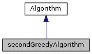
Collaboration diagram for secondGreedyAlgorithm:
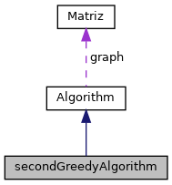
Public Member Functions | |
| secondGreedyAlgorithm (std::string filename, int sol) | |
| Construct a new secondGreedyAlgorithm object. More... | |
| std::vector< int > | execute () |
| Method that executes the algorithm. More... | |
| std::vector< float > | gravityCenter (std::vector< int >) |
| Method that calculates the gravity center. More... | |
| int | closestElement (std::vector< int >, std::vector< float >) |
| Returns the index of the closest element to the center. More... | |
| float | totalDistance (std::vector< int >) |
| Method that computes the total distance given a solution. More... | |
| float | distanceTwoPoints (int, int) |
| Calculates the distance between two points. More... | |
 Public Member Functions inherited from Algorithm Public Member Functions inherited from Algorithm | |
| Algorithm (std::string filename, int sol) | |
| Construct a new Algorithm object. More... | |
Additional Inherited Members | |
| Protected Attributes inherited from Algorithm | |
| Matriz | graph |
| int | solutionSize |
Detailed Description
Another implementation of the greedy algorithm to solve Maximum diversity problem.
Constructor & Destructor Documentation
◆ secondGreedyAlgorithm()
|
inline |
Construct a new secondGreedyAlgorithm object.
- Parameters
-
filename
Algorithm(std::string filename, int sol)
Construct a new Algorithm object.
Definition: algorithm.hpp:36
Here is the call graph for this function:
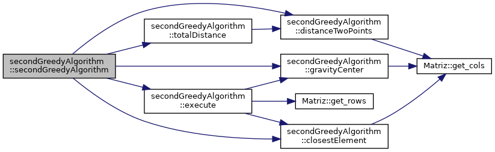
Member Function Documentation
◆ closestElement()
| int secondGreedyAlgorithm::closestElement | ( | std::vector< int > | Elem, |
| std::vector< float > | SC | ||
| ) |
Returns the index of the closest element to the center.
- Returns
- int
Here is the call graph for this function:
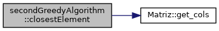
Here is the caller graph for this function:
◆ distanceTwoPoints()
| float secondGreedyAlgorithm::distanceTwoPoints | ( | int | point1, |
| int | point2 | ||
| ) |
Calculates the distance between two points.
- Returns
- float
Here is the call graph for this function:
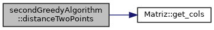
Here is the caller graph for this function:
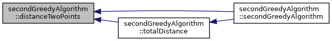
◆ execute()
|
virtual |
Method that executes the algorithm.
- Returns
- std::vector<float>
Implements Algorithm.
std::vector< float > gravityCenter(std::vector< int >)
Method that calculates the gravity center.
Definition: 2ndGreedyAlgorithm.cpp:19
int closestElement(std::vector< int >, std::vector< float >)
Returns the index of the closest element to the center.
Definition: 2ndGreedyAlgorithm.cpp:31
Here is the call graph for this function:
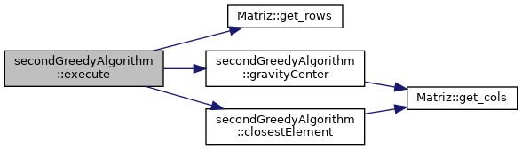
Here is the caller graph for this function:
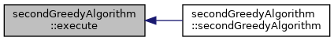
◆ gravityCenter()
| std::vector< float > secondGreedyAlgorithm::gravityCenter | ( | std::vector< int > | Elem | ) |
Method that calculates the gravity center.
- Returns
- std::vector<float>
Here is the call graph for this function:
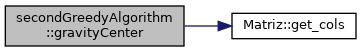
Here is the caller graph for this function:
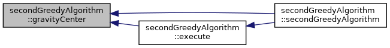
◆ totalDistance()
| float secondGreedyAlgorithm::totalDistance | ( | std::vector< int > | solution | ) |
Method that computes the total distance given a solution.
- Returns
- float
float distanceTwoPoints(int, int)
Calculates the distance between two points.
Definition: 2ndGreedyAlgorithm.cpp:67
Here is the call graph for this function:
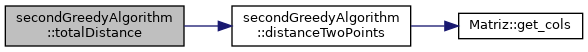
Here is the caller graph for this function:
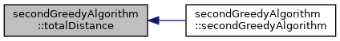
The documentation for this class was generated from the following files:
- include/2ndGreedyAlgorithm.hpp
- src/2ndGreedyAlgorithm.cpp